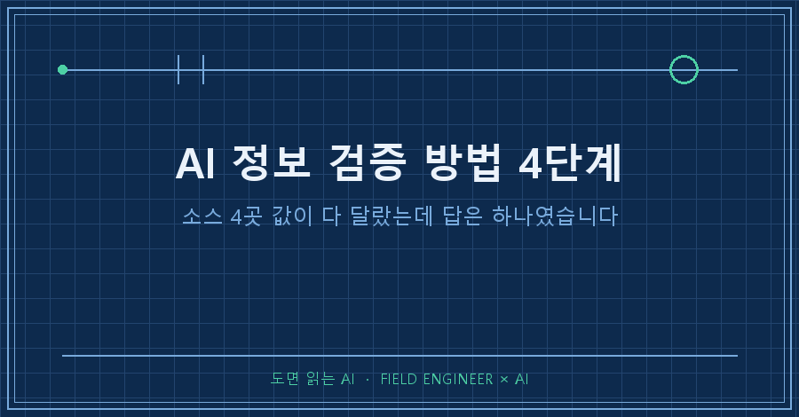
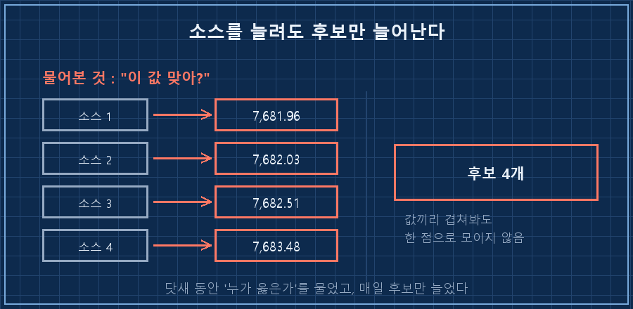
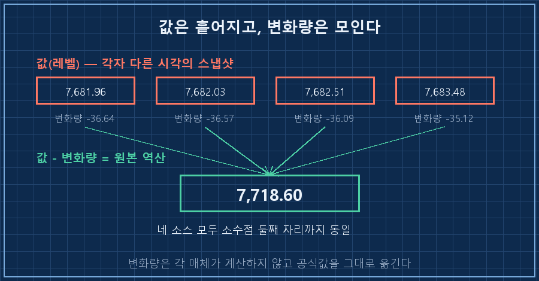
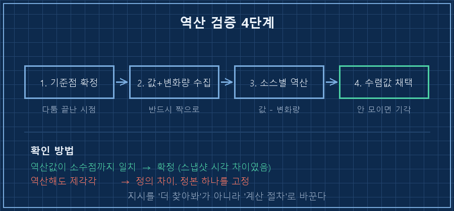

AI 정보 검증 방법을 찾다가 닷새를 통째로 날린 얘기부터 할게요. 이 숫자 넷 때문이었습니다.
7,681.96
7,682.03
7,682.51
7,683.48같은 날, 같은 지표의 마감값입니다. 네 군데서 받아 적었어요.
넷 다 소수점 둘째 자리까지 적혀 있고, 넷 다 서로 다릅니다.
저는 이걸로 닷새를 씨름했어요. 누가 틀렸는지 알아내려고요.
그런데 답은 아무도 안 틀렸다였습니다. 제가 틀린 걸 비교하고 있었던 거예요..
AI 정보 검증 방법을 한 줄로 줄이면 이렇습니다.
값이 소스마다 다를 땐 값끼리 맞춰보지 말고, 각 소스가 같이 적어둔 변화량으로 원본을 역산하세요. 값은 소스 수만큼 흩어지는데 변화량은 한 점으로 모입니다.
2026년 9월 기준이고, 매일 새벽에 혼자 도는 개인 자동화에서 나온 얘기예요. 도구는 상관없습니다. AI한테 바깥 숫자를 물어다 쓰는 구조면 어디서든 같은 자리에 걸려요.
제 본업은 제조 쪽입니다. 도면 놓고 물건이 그대로 나왔는지 보는 일을 15년쯤 했어요. 도면 여러 장을 겹쳐볼 때 원점이 서로 다르면 좌표는 죽어도 안 맞습니다. 그런데 구멍 두 개 사이 거리는 어느 도면에서 재도 똑같아요. 이번에 제가 놓친 게 정확히 그거였습니다.
1. 소스를 늘렸더니 후보만 늘어났어요
제 자동화는 매일 새벽에 바깥 숫자 몇 개를 긁어와 문서로 만듭니다. 어느 날부터 지표 여섯 개가 소스마다 다르게 잡히기 시작했어요.
처음엔 정석대로 갔습니다. 소스를 하나 더 붙였죠. 그랬더니 값이 좁혀지는 게 아니라 후보가 하나 더 생겼습니다. 넷으로 늘렸을 땐 후보가 넷이 됐고요.
그 상태로 닷새가 흘렀어요. 로그엔 이렇게만 남습니다.
# 실제 실행 로그를 익명화해 옮긴 것입니다
[04:00:02] 시작
지난 거래일 지표 6건 — 소스 간 값 상충, 닷새째 '잠정' 유지
레벨(값) 비교로는 판별 불가 → 다음 거래일 확정치 확보 후 재대조
[04:16:39] 종료코드: 0종료코드는 0이에요. 프로그램은 멀쩡히 다 돌았고, 답만 안 나온 겁니다. 자동화의 실패가 대개 이런 모습이라 더 오래 끌게 돼요. 빨간 글씨로 안 뜨고 "판별 불가"라는 담담한 한 줄로 지나가거든요.
여기서 제가 매일 던진 질문이 "누가 옳은가"였습니다. 닷새 동안 그 질문만요.

2. 값은 흩어지고 변화량은 모입니다
닷새째 되던 날, 그날 마감값을 네 곳에서 다시 받아 적으면서 옆 칸도 같이 옮겨봤어요. 각 소스가 "얼마나 움직였는지"를 적어둔 칸이요.
그리고 각자의 마감값에 각자의 낙폭을 도로 더해봤습니다. 전날 값을 거꾸로 계산해 본 거예요.
| 소스 | 그날 마감값 (값) | 그날 낙폭 (변화량) | 역산한 전날 값 |
|---|---|---|---|
| 소스 1 | 7,681.96 | -36.64 | 7,718.60 |
| 소스 2 | 7,682.03 | -36.57 | 7,718.60 |
| 소스 3 | 7,682.51 | -36.09 | 7,718.60 |
| 소스 4 | 7,683.48 | -35.12 | 7,718.60 |
네 줄이 소수점 둘째 자리까지 똑같이 떨어졌습니다.
이유는 허무할 만큼 단순했어요. 각 매체는 마감값을 자기가 화면을 찍은 시각의 스냅샷으로 싣습니다. 그래서 값이 조금씩 다른 거예요. 그런데 등락폭은 자기가 계산하지 않고 거래소 공식값을 그대로 옮깁니다. 그래서 변화량은 하나로 모입니다.
사진 넉 장을 아무리 겹쳐봐도 원본은 안 나오는데, 사진마다 적힌 "원본에서 얼마나 달라졌는지"를 알면 넉 장 다 같은 원본을 가리키는 것과 같아요.
이 방법으로 닷새 끌던 여섯 건이 그날 아침에 전부 확정됐습니다. 그리고 여섯 건 전부, 제가 반반이라고 적어뒀던 쪽이 아니었어요. 한 건은 값이 아니라 방향 자체가 반대였습니다. 저는 내렸을 수도 있다고 적었는데 실제로는 오른 값이었거든요.
여러분은 AI가 물어온 숫자가 어긋날 때, 값 옆 칸에 뭐가 같이 적혀 있는지 보시나요? 저는 닷새 동안 그 칸을 그냥 지나쳤습니다..

3. 그대로 따라 하는 AI 정보 검증 방법 4단계
전제조건: 그 수치가 ①시간에 따라 변하고 ②각 소스가 "직전 대비 얼마나 변했는지"를 같이 적어두는 종류여야 합니다. 시장 지표·트래픽·계측값·누적 카운터가 여기 해당해요. 2026년 9월 기준으로 제 자동화에 들어가 있는 절차 그대로입니다.
1. 기준점 하나를 확정한다. 이미 다툼이 끝난 시점의 값을 잡습니다. 소스 전부가 같은 값을 적어두는 시점이면 됩니다.
2. 각 소스에서 값과 변화량을 짝으로 가져온다. 값만 가져오면 이 방법을 못 씁니다. 저는 이 짝을 안 챙겨서 닷새를 썼어요.
3. 소스별로 역산한다. 역산값 = 그 소스의 값 − 그 소스의 변화량. 뺄셈 한 번이면 끝입니다.
4. 모이는 값을 채택하고, 안 모이는 소스는 기각한다. 두 곳 이상이 같은 값으로 떨어지면 그게 정본이에요.
확인 방법은 이렇습니다. 역산값이 소수점까지 일치하면 성공이고, 소스마다 여전히 제각각이면 이건 스냅샷 문제가 아니라 다른 문제라는 신호예요(4번 항목에서 이어서 다룹니다).
비율로만 적힌 경우도 같습니다. 나눗셈으로 바꾸면 돼요.
# 지시서에 추가한 규칙 (문구는 익명화)
소스 간 값이 불일치하면 '값'이 아니라 '변화량'으로 역산한다.
역산값 = 그 소스의 값 − 그 소스의 변화폭
비율만 있으면 = 그 소스의 값 ÷ (1 + 변화율)
→ 소스가 달라도 같은 값으로 수렴하면 그 값을 확정으로 채택
이유 : 값은 각자 다른 시각의 스냅샷, 변화량은 공식값의 복사본실제로 변화율만 있던 지표 하나는 15.30 ÷ 1.0530 = 14.53으로 떨어졌고, 방향이 반대였던 후보값을 그 자리에서 기각했습니다. 다른 지표 네 개에서도 같은 방식이 그대로 재현돼서 규칙으로 올렸어요.

4. 이 방법이 안 통하는 경우
만능은 아닙니다. 역산해도 안 모이면 원인이 다른 데 있어요.
| 상태 | 정체 | 해야 할 일 |
|---|---|---|
| 역산값이 한 점으로 모임 | 소스별 스냅샷 시각 차이 | 모인 값을 정본으로 확정 |
| 역산해도 여전히 제각각 | 집계 정의 자체가 다름(기간·범위·산출식) | 정본 하나를 정하고 나머지는 참고값으로 강등 |
| 변화량 칸이 아예 없음 | 그 소스가 원본을 안 들고 있음 | 소스를 바꾼다 |
전에 한 번, 값이 다른 이유가 정의 차이여서 소스를 아무리 늘려도 안 풀린 적이 있어요. 그땐 답이 "정본 고정"이었습니다. 이번 건은 정의는 같은데 찍은 시각만 달랐던 경우라 역산으로 풀린 거고요. 같은 증상인데 처방이 정반대라, 저는 이제 역산부터 해보고 안 모이면 정의를 뒤집니다.
먼저 나올 것 같은 질문 세 가지
Q. 그냥 제일 믿을 만한 소스 하나만 쓰면 안 되나요?
그래도 됩니다. 다만 그건 "확정"이 아니라 "선택"이에요. 나중에 그 소스가 값을 조용히 갱신하면 아무도 모릅니다. 역산은 서로 다른 네 곳이 같은 답을 내놓는 걸 확인하는 절차라, 근거가 소스의 평판이 아니라 계산에 있어요.
Q. AI한테 그냥 "정확한 값 찾아줘"라고 시키면 되지 않나요?
그게 닷새 동안 제가 시킨 일이고, 매일 성실한 실패가 돌아왔어요. AI 정보 검증 방법에서 제일 자주 하는 실수가 이거라고 봅니다. 지시가 "더 찾아봐"면 AI는 후보를 늘리는 쪽으로 일해요. 지시를 계산 절차로 바꿔줘야 답이 좁혀집니다.
Q. 소스 두 곳뿐이어도 되나요?
됩니다. 둘이 같은 값으로 모이면 그것도 근거예요. 다만 둘이 안 모일 땐 어느 쪽이 이상한지 못 가려요. 저는 그래서 최소 세 곳을 봅니다. 세 곳이면 혼자 튀는 값을 떼어낼 수 있거든요.
정리하면 이번에 바꾼 건 소스도 도구도 아니고 질문 하나였어요. "누가 옳은가" 대신 "내가 지금 뭘 비교하고 있는가"로요. 소스를 더 붙여도 안 풀리는 문제는 소스가 부족한 게 아니라 비교 대상이 틀린 겁니다. 닷새를 끌던 여섯 건이 결국 뺄셈 한 번에 떨어졌네요! 다음 편에서는 이렇게 확정한 값이 하루 뒤 조용히 바뀌어 있을 때 그걸 어떻게 잡아냈는지 써보겠습니다.
궁금하시면 makefield.ai에 제 자동화가 굴러온 기록이 있어요.
태그: #AI정보검증방법 #AI숫자검증 #AI출처불일치 #AI교차검증 #AI팩트체크 #AI데이터정합성 #AI결과물검수 #AI할루시네이션 #AI에게일시키기 #AI자동화구축 #자동화브리핑 #AI리포트검증 #파이썬자동화 #개인AI에이전트 #도면읽는AI